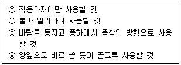
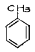
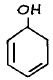
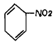
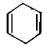
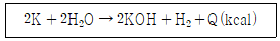

위험물기능사 (2004-02-01 기출문제)
1과목: 화재 예방과 소화방법
1. 제 5류 위험물이 소화하기 어려운 이유로 가장 알맞은 것은?
- 물과 발열반응을 일으킨다.
- 발화점이 높다.
- 자기연소를 일으키며 연소속도가 매우 빠르다.
- 연소할 때 연소물이 튀어 넓게 퍼진다.
(정답률: 68%)

2. 단독경보형 감지기에 내장된 건전지는 1 년에 몇 회 이상 교환해야 하는가?
- 4 회
- 3 회
- 2 회
- 1 회
(정답률: 55%)
3. 물이 소화제로 이용되는 가장 큰 이유는?
- 기화열로 가연물을 냉각하기 때문이다.
- 물이 공기를 차단하기 때문이다.
- 물은 환원성이 있기 때문이다.
- 물이 가연물을 제거하기 때문이다.
(정답률: 82%)
4. 자연발화에 영향을 주는 인자 중 가장 영향을 적게 주는 것은?
- 발열량
- 수분
- 열의 축적
- 미생물
(정답률: 71%)
5. 제 1류 위험물에 대한 일반적인 화재예방법이 아닌 것은?
- 반응성이 커서, 가열, 마찰, 충격 등에 유의한다.
- 불연성이기 때문에 열접촉은 괜찮다.
- 가연물의 접촉, 혼합 등을 피한다.
- 질식소화는 효과가 없다.
(정답률: 76%)
6. 위험물 제 1∼6류 모두에 적응성 있는 소화설비는?
- 불연성가스를 방사하는 소화기
- 강화액을 봉상으로 방사하는 소화기
- 포말을 방사하는 소화기
- 팽창진주암
(정답률: 63%)
7. 가연성고체 위험물에 적응하는 소화설비가 아닌 것은?
- 옥내소화전설비
- 스프링클러소화설비
- 호스릴포 설비
- 포말소화설비
(정답률: 41%)
8. 소화기표시가 황색인 경우 적응성이 있는 화재의 종류는?
- 전기화재
- 일반화재
- 금속화재
- 유류화재
(정답률: 71%)
9. 제조소 중 위험물을 취급하는 건축물 외벽의 재료는?
- 불연재료
- 준불연재료
- 방화구조
- 내화구조
(정답률: 50%)
10. 피난구 유도등은 피난구의 바닥으로부터 몇 미터 이상의 곳에 설치해야 하는가?
- 0.5m 이상
- 1m 이상
- 1.5m 이상
- 2m 이상
(정답률: 40%)
11. 알콜 화재 시 포소화제는 효과가 없다. 그 이유로 가장 적당한 것은?
- 알콜은 수용성이라 포를 소멸시키므로
- 알콜과 반응해 가연성 GAS 를 발생하므로
- 불꽃의 온도를 높이므로
- 알콜이 포소화제와 작용해 유독한 가스를 발생하므로
(정답률: 67%)
12. 화재가 발생 하였을 때 피난하기 위한 설비가 아닌 것은?
- 공기안전매트
- 완강기
- 미끄럼대
- 비상방송설비
(정답률: 63%)
13. 금수성 물질인 인화칼슘(Ca3P2)이 물과 반응하였을 때 발생하는 가스는?
- 수소
- 산소
- 포스핀
- 아세틸렌
(정답률: 71%)
14. 소화방법에 대한 설명으로 옳지 않은 것은?
- 제거소화란 가연물을 연소구역에서 없애주는 방법이다.
- 억제소화란 연소의 활성화속도를 느리게 하는 용매를 사용하는 방법이다.
- 냉각소화란 연소물로부터 열을 빼앗아 발화점 이하로 온도를 낮추는 방법이다.
- 질식소화란 공기중 산소농도를 약 20% 에서 5%이하로 떨어뜨려 연소를 중단시키는 방법이다.
(정답률: 48%)
15. 소화기의 사용방법을 바르게 설명한 것 끼리 묶어 놓은 것은?

- ㉠㉡
- ㉠㉢
- ㉠㉣
- ㉠㉢㉣
(정답률: 46%)
16. 황을 목탄가루 등과 혼합하면 약간의 충격, 가열 등으로 발화한다. 이 때 가장 적당한 소화방법은?
- 포의 방사에 의한 소화
- 분말 소화제에 의한 소화
- 다량의 물에 의한 소화
- 할로겐화합물의 방사에 의한 소화
(정답률: 49%)
17. 위험물을 저장 또는 취급하는 제조소는 경보설비를 갖추어야 하는데, 적용대상은?
- 지정수량 2~5배 이상
- 지정수량 4~6배 이상
- 지정수량 6~8배 이상
- 지정수량 10배 이상
(정답률: 54%)
18. 인명구조기구에 해당되지 않는 것은?
- 안전모
- 공기호흡기
- 방열복
- 인공소생기
(정답률: 35%)
19. 알킬알루미늄 이동탱크 저장소의 소화설비로서 부적당한 것은?
- 수동식 소화기
- 마른모래
- 팽창질석
- 스프링클러
(정답률: 64%)
20. 옥내소화전의 설치기준으로 옳지 않은 것은?
- 주배관 중 입상관의 구경은 50밀리미터 이상으로 한다.
- 펌프의 성능시험배관은 펌프의 토출측에 설치된 개폐밸브 이후에서 분기한다.
- 옥내소화전방수구와 연결되는 가지배관의 구경은 40밀리미터 이상으로 한다.
- 펌프의 토출측 주배관의 구경은 유속이 1초당 3미터이하가 될 수 있는 크기 이상으로 한다.
(정답률: 27%)
2과목: 위험물의 화학적 성질 및 취급
21. 과산화나트륨(Na2O2)의 성질중 옳은 것은?
- 무색,무취의 결정성 고체이다.
- 산과 반응하여 과산화수소를 생성한다.
- 조해성이 있고 물과 반응하여 수소를 발생한다.
- 오렌지색의 분말로 가열하면 산소와 나트륨이 생성된다.
(정답률: 38%)
22. 다음 중 질산암모늄에 대한 설명으로서 옳은 것은?
- 열처리제로 사용하기도 한다.
- 습한 곳에 저장 하는 것이 좋다.
- 가열하면 약 300℃에서 분해 한다.
- 단독으로도 급격한 가열, 충격으로 분해, 폭발하는 수도 있다.
(정답률: 59%)
23. 염소산칼륨의 성질에 있어서 옳은 것은?
- 잘 타는 물질이다.
- 수용액은 산성을 나타낸다.
- 산화성물질로서 온수에 잘녹는다.
- 가열, 마찰에 의해서 가연성 가스가 발생한다.
(정답률: 33%)
24. 과망간산칼륨의 일반성상에 관한 설명 중 틀린 것은?
- 강한 살균력과 산화력이 있다.
- 금속성 광택이 있는 무색의 결정이다.
- 가열분해시키면 산소를 방출한다.
- 상온에서 안정하다.
(정답률: 38%)
25. 가연성고체 위험물의 일반성질로서 잘못 설명된 것은?
- 모두 단체의 비금속 원소이다.
- 물에 불용하며, 산화하기 쉬운 물질이다.
- 연소할 때 유독한 기체를 발생하는 것도 있다.
- 비교적 낮은 온도에서 착화하기 쉬운 가연성물질이다.
(정답률: 45%)
26. 적린의 성질에 관한 설명 중 틀린 것은?
- 착화온도는 약 260℃
- 물, 암모니아에 불용
- 연소시 인화수소가스가 발생
- 산화제와 혼합시 착화하기 쉽다.
(정답률: 38%)
27. 황에 어떤 성질의 물질을 혼합하여 충격을 가하면 폭발의 위험이 있는가?
- 산화제
- 부촉매
- 염화물
- 환원제
(정답률: 58%)
28. 카아바이트(CaC2)의 일반성질에 대한 설명 중 틀린 것은?
- 물과 심하게 반응하여 발열한다.
- 물과 반응하여 가연성 메탄 가스를 발생시킨다.
- 순수한것은 무색투명하나 보통은 흑회색의 덩어리 상태이다.
- 건조한 공기 중에서는 안정하나 350℃이상으로 열을 가하면 산화된다.
(정답률: 26%)
29. 물이나 약산과 심하게 반응하여 포스핀 가스를 발생시키는 물질은?
- 탄화칼슘
- 산화칼슘
- 인화석회
- 탄화알루미늄
(정답률: 57%)
30. 금속나트륨(Na)의 성질에 관한 설명으로 옳은 것은?
- 햇빛을 쪼이면 환원된다.
- 황갈색의 무른 경금속이다.
- 물에 대하여는 발열하지 않고 잘 녹는다.
- 석유와 반응이 일어나지 않아 저장액으로 이용한다.
(정답률: 71%)
31. 다음 물질중 인화점이 가장 낮은 것은?
- 경유
- 벤젠
- 에틸에테르
- 메틸알코올
(정답률: 32%)
32. 다음 중 특수인화물에 해당하는 위험물은?
- 벤젠
- 아세톤
- 콜로디온
- 아세토니트릴
(정답률: 33%)
33. 산화프로필렌의 성질 및 위험성에 관한 설명으로 틀린 것은?
- 연소 범위는 가솔린 보다 넓다.
- 산,알칼리가 존재하면 중합반응을 한다.
- 인화점이 -37℃이므로 제1석유류에 속한다.
- 화학적으로 활성이 크고 반응을 할 때에는 발열반응을 한다.
(정답률: 50%)
34. 다음 중 T.N.T의 원료로 사용되는 것은?




(정답률: 17%)
35. 다음 중 트리니트로톨루엔을 녹일 수 없는 용제는?
- 물
- 벤젠
- 아세톤
- 에테르
(정답률: 60%)
36. 과염소산염류에 공통된 성질에 관한 설명 중 옳은 것은?
- 인화성이 크다.
- 발화성향이 높다.
- 연소성이 양호하다.
- 타 물질의 연소를 촉진한다.
(정답률: 42%)
37. 다음 중 황산의 위험성과 관계가 있는 것은?
- 가연성의 고체다.
- 인화하기 쉬운 기체이다.
- 물과 반응하여 조연성 가스를 발생한다.
- 비휘발성, 산화성액체로서 탈수작용을 한다.
(정답률: 25%)
38. 과산화수소의 성질 및 취급에 대한 설명 중 옳지 않은 것은?
- 햇빛에 의해 분해된다.
- 물에는 어떤 비율로도 혼합한다.
- 극히 안정하여 상온에서는 분해 되지 않는다.
- 저장할 때는 착색 용기에 넣어 냉소에 저장한다.
(정답률: 45%)
39. 옥내저장소에서 지정유기과산화물의 저장창고 창문 하나의 면적은 얼마 이내인가?
- 0.8m2
- 0.6m2
- 0.4m2
- 0.2m2
(정답률: 22%)
40. 위험물시설안전원을 두어야 할 제조소 등은 지정수량의 몇 배이상을 취급하는 제조소 및 일반 취급소인가?
- 50배 이상
- 500배 이상
- 1000배 이상
- 10000배 이상
(정답률: 21%)
41. 제3류 위험물의 공통적인 성질을 설명한 것 중 옳은 것은? (단, 황린은 제외)
- 모두 무기화합물이다.
- 저장액으로 석유류를 이용한다.
- 햇빛에 노출되는 순간 발화한다.
- 물과 반응시 발열 또는 발화한다.
(정답률: 33%)
42. 염소산나트륨의 저장 및 취급에 관한 설명 중 잘못 설명된 것은?
- 가열, 충격, 마찰을 피한다.
- 분해를 촉진하는 약품류와의 접촉을 피한다.
- 공기와의 접촉을 피하기 위하여 물속에 저장한다.
- 조해성이 있으므로 용기의 밀폐, 밀봉하여 저장한다.
(정답률: 80%)
43. 제1석유류의 물질 특성상 취급시 주의해야 할 사항은?
- 충격을 가하지 말것.
- 물과의 접촉을 피할 것.
- 화기를 가까이 하지 말것.
- 불연물을 가까이 하지 말것.
(정답률: 65%)
44. 나트륨(Na) 취급을 잘못해 표면이 회백색으로 변했다. 이 나트륨(Na)표면에 생성된 물질의 분자식을 올바르게 표시한 것은?
- Na2O
- NaCl
- NaNO3
- NaOH
(정답률: 17%)
45. 유기과산화물인 MEKPO의 지정수량은?
- 10kg
- 50kg
- 600kg
- 1000kg
(정답률: 32%)
46. 다음은 제2류 위험물의 공통적인 저장 및 취급사항을 기술한 것이다. 틀린 것은?
- 열원 및 가열을 피한다.
- 산화제와의 접촉을 피한다.
- 금속분은 석유속에 저장한다.
- 용기의 파손 및 누출에 유의한다.
(정답률: 49%)
47. 금속칼륨은 공기중에서 수분과 반응하여 수소를 발생시킨다. 이 때 열량은 약 몇 kcal 인가?

- 62.8
- 72.8
- 82.8
- 92.8
(정답률: 15%)
48. 다음 중 증기의 밀도가 가장 큰 것은?
- CH3OH
- C2H5OH
- CH3COCH3
- CH3COOC5H11
(정답률: 52%)
49. 메탄올의 화학적, 물리적 성질을 잘못 설명한 것은?
- 산화되면 포름알데히드가 된다.
- 비중이 0.8이므로 물과 층분리가 일어난다.
- 알칼리금속과 반응하여 수소를 발생시킨다.
- 완전연소시키면 물과 이산화탄소가 생성된다.
(정답률: 35%)
50. 다음중 에틸렌글리콜과 글리세린의 공통점이 아닌 것은?
- 독성이 있다.
- 수용성 이다.
- 무색의 액체이다.
- 단맛이 있다.
(정답률: 28%)
51. 다음중 제2석유류로만 짝지어진 것은?
- 등유 – 피리딘
- 경유 - 휘발유
- 등유 – 중유
- 경유 - 아크릴산
(정답률: 43%)
52. 다음 조건 중에서 제2종 가연물을 설명한 것은?
- 20℃에서 가연성 증기를 발생하면서 연소 열량은 1kg당 8000 칼로리 이상인 것
- 40℃이상에서 100℃미만에서 가연성 증기를 발생하는 것
- 30℃ 이상에서 가연성 증기를 발생하는 것
- 100℃ 이상에서 가연성 증기를 발생하는 것으로서 연소 열량이 1kg당 8000 칼로리 이상인 것
(정답률: 45%)
53. 질산의 성질에 관한 설명 중 옳은 것은?
- 금· 백금 등 귀금속을 녹인다.
- 가열 또는 햇빛에 의하여 수소가스가 발생한다.
- 황(S), 인(P), 탄소와는 가열해도 반응하지 않는다.
- 강한 산성을 나타내며 68% 수용액 일 때 가장 높은 끓는점을 가진다.
(정답률: 18%)
54. 제6류 위험물의 공통적인 특성으로서 틀린 것은? (단, 과산화수소는 제외한다.)
- 센산화력이 있다.
- 가열하면 발화한다.
- 물로 희석하면 발열한다.
- 피부나 의류에 닿으면 부식시킨다.
(정답률: 23%)
55. 소방법에 의한 위험물을 취급함에 있어서 발생하는 정전기를 유효하게 제거하는 방법으로 옳지 않는 것은?
- 인화방지망 설치방법
- 접지에 의한 방법
- 공기를 이온화 하는 방법
- 상대습도를 70%이상 높이는 방법
(정답률: 62%)
56. 다음 중 제5류 위험물이 아닌 것은?
- 니트로글리세린
- 니트로톨루엔
- 니트로글리콜
- 트리니트로톨루엔
(정답률: 40%)
57. 다음 화합물중 망간의 산화수가 +6인 것은?
- KMnO4
- MnO2
- MnSO4
- K2MnO4
(정답률: 10%)
58. 삼황화린(P4S3)은 다음 중 어느 물질에 녹는가?
- 물
- 염산
- 질산
- 황산
(정답률: 17%)
59. 소방법상 위험물 분류 할 때 니트로화합물류에 속하는 것은?
- 질산에틸[C2H5ONO2]
- 히드라진[N2H4]
- 질산메틸 [CH3ONO2]
- 피크르산[C6H2(OH)(NO2)2]
(정답률: 53%)
60. 불연성가스 소화설비의 대표적인 물질은?
- O2
- CO2
- CO
- CH3CO2
(정답률: 67%)